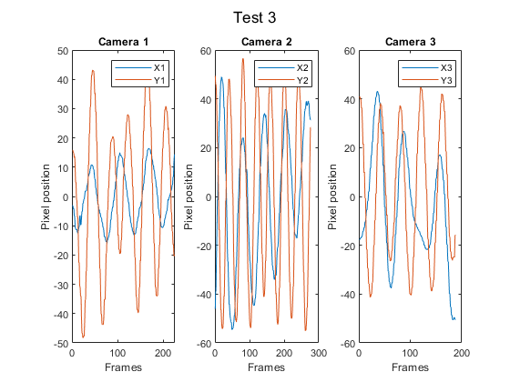
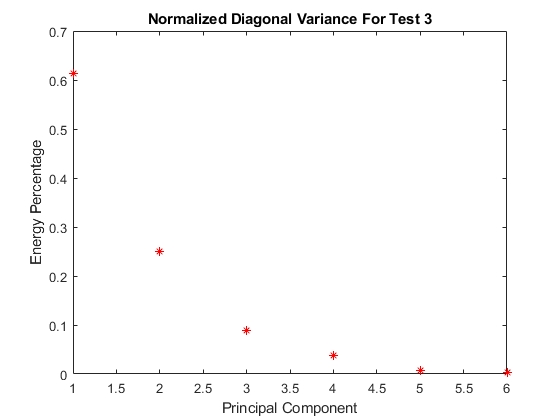
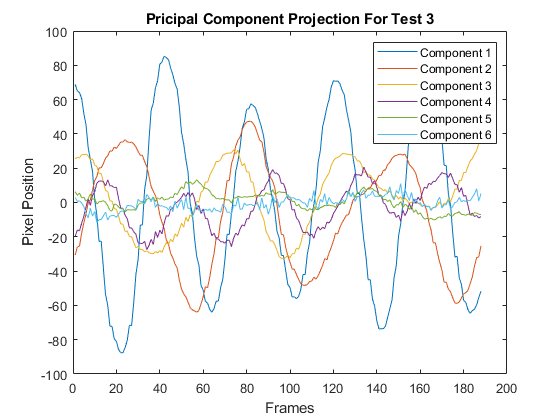

Contents
clc; clear all; close all
Load test 2 data
load('cam1_3.mat')
load('cam2_3.mat')
load('cam3_3.mat')
Obtain the x and y variable data points
numFrames13 = size(vidFrames1_3, 4);
numFrames23 = size(vidFrames2_3, 4);
numFrames33 = size(vidFrames3_3, 4);
x13 = zeros(numFrames13, 1);
y13 = x13;
bottom = 410;
top = 190;
left = 240;
right = 420;
for i = 1 : numFrames13
X13 = double(rgb2gray(vidFrames1_3(:, :, :, i)));
X13(:, 1:left) = 0;
X13(:, right:end) = 0;
X13(1:top, :) = 0;
X13(bottom:end, :) = 0;
[M, I] = max(max(X13));
[row, col] = find(X13 >= 0.9*M);
x13(i) = mean(col);
y13(i) = mean(row);
end
x13 = x13 - mean(x13);
y13 = y13 - mean(y13);
[M, I] = max(y13(1:50));
x13 = x13(I:end);
y13 = y13(I:end);
figure(1)
set(gca, 'FontSize', 15)
sgtitle('Test 3');
subplot(1, 3, 1)
plot(x13);
hold on;
plot(y13);
legend('X1', 'Y1');
title('Camera 1');
xlabel('Frames');
ylabel('Pixel position');
x23 = zeros(numFrames23, 1);
y23 = x23;
bottom = 390;
top = 150;
left = 250;
right = 410;
for i = 1 : numFrames23
X23 = double(rgb2gray(vidFrames2_3(:, :, :, i)));
X23(:, 1:left) = 0;
X23(:, right:end) = 0;
X23(1:top, :) = 0;
X23(bottom:end, :) = 0;
[M, I] = max(max(X23));
[row, col] = find(X23 >= 0.95*M);
x23(i) = mean(col);
y23(i) = mean(row);
end
x23 = x23 - mean(x23);
y23 = y23 - mean(y23);
[M, I] = max(y23(1:50));
x23 = x23(I:end);
y23 = y23(I:end);
subplot(1, 3, 2)
plot(x23);
hold on;
plot(y23);
legend('X2', 'Y2');
title('Camera 2');
xlabel('Frames');
ylabel('Pixel position');
x33 = zeros(numFrames33, 1);
y33 = x33;
bottom = 320;
top = 180;
left = 250;
right = 480;
for i = 1 : numFrames33
X33 = double(rgb2gray(vidFrames3_3(:, :, :, i)));
X33(:, 1:left) = 0;
X33(:, right:end) = 0;
X33(1:top, :) = 0;
X33(bottom:end, :) = 0;
[M, I] = max(max(X33));
[row, col] = find(X33 >= 0.9*M);
y33(i) = mean(col);
x33(i) = mean(row);
end
x33 = x33 - mean(x33);
y33 = y33 - mean(y33);
[M, I] = max(y33(1:50));
x33 = x33(I:end);
y33 = y33(I:end);
subplot(1, 3, 3)
plot(x33);
hold on;
plot(y33);
legend('X3', 'Y3');
title('Camera 3');
xlabel('Frames');
ylabel('Pixel position');
saveas(gcf, 'Position_Test3.jpg')

Reshape data
n = min([length(y13), length(y23), length(y33)]);
X = [x13(1:n)'; y13(1:n)'; x23(1:n)'; y23(1:n)'; x33(1:n)'; y33(1:n)'];
[U, S, V] = svd(X, 'econ');
lambda = diag(S).^2;
Y = U'*X;
figure(2)
set(gca, 'FontSize', 10)
lambdaSum = sum(lambda);
plot(lambda./lambdaSum, 'r*');
title('Normalized Diagonal Variance For Test 3');
xlabel('Principal Component');
ylabel('Energy Percentage');
saveas(gcf, 'Variance_Test3.jpg')
figure(3)
set(gca, 'FontSize', 10)
plot(Y(1, :));
hold on;
plot(Y(2, :));
plot(Y(3, :));
plot(Y(4, :));
plot(Y(5, :));
plot(Y(6, :));
legend('Component 1', 'Component 2', 'Component 3', 'Component 4', 'Component 5', 'Component 6');
title('Pricipal Component Projection For Test 3');
xlabel('Frames');
ylabel('Pixel Position');
saveas(gcf, 'Projection_Test3.jpg')
 